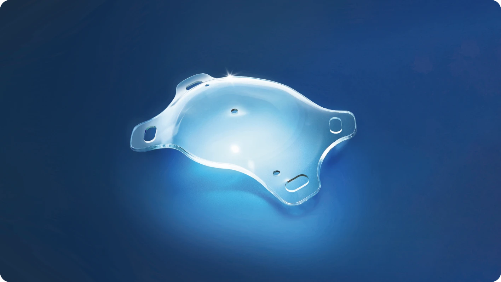
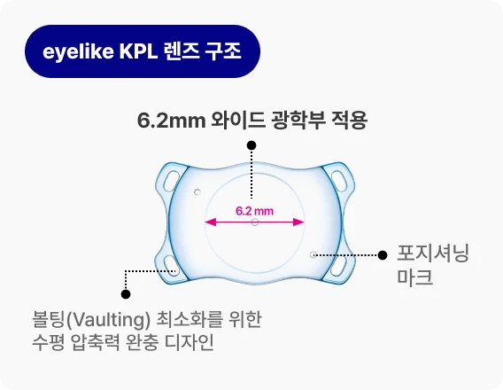
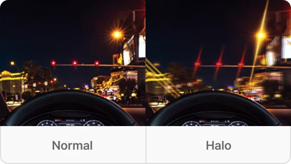
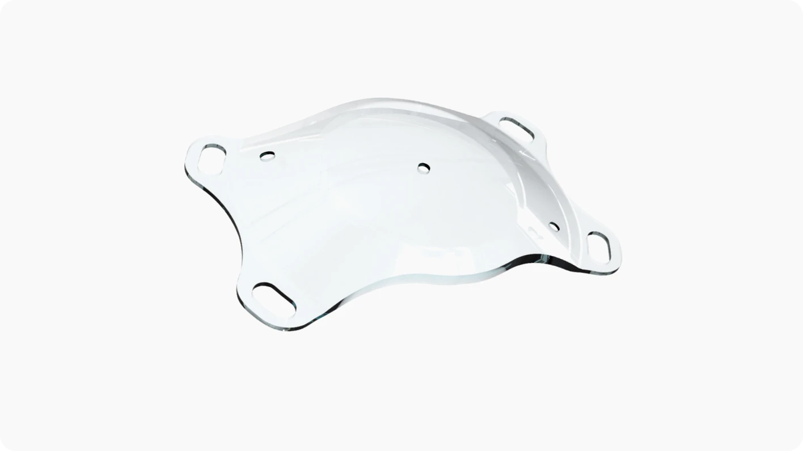

한국인의 눈에 최적화된 국내 개발 렌즈
PhakiFlex KPL은 한국인의 안구 구조에 맞춰 설계된 렌즈로, 국내 제조 기술을 바탕으로 개발·생산되었습니다. 다양한 직접 사이즈와 도수 옵션을 갖추고 있어 보다 정밀한 시력 교정이 가능합니다.
한국인의 눈 구조를 고려해 설계된 국내 개발 렌즈로, 근시와 난시 교정에 적용할 수 있는 맞춤형 안내삽입렌즈입니다.
eyelike PhakiFlex KPL은 Hydrophilic Acrylic Copolymer 소재로 제작된 근시 시력교정용 안내삽입렌즈입니다.
한국인의 눈 구조를 고려한 설계와 다양한 사이즈·도수 옵션을 통해 보다 정밀한 시력 교정에 도움을 줍니다.
오랜 시간 축적된 전문성과 기술 노하우
개별 환자 특성에 맞춘 커스터마이징 가능
전 세계적으로 70년 이상 검증된 재질

PhakiFlex KPL은 한국인의 안구 구조에 맞춰 설계된 렌즈로, 국내 제조 기술을 바탕으로 개발·생산되었습니다. 다양한 직접 사이즈와 도수 옵션을 갖추고 있어 보다 정밀한 시력 교정이 가능합니다.
PhakiFlex KPL은 렌즈가 눈 속 공간에 맞춰 유연하게 수축되도록 설계되었습니다. 미세한 사이즈 오차가 발생하더라도 눈 안에 꼭 맞게 안정적으로 고정되어, 오랫동안 편안하고 선명한 시야를 유지할 수 있도록 돕습니다.

PhakiFlex KPL은 모든 렌즈에 6.2mm의 넓은 광학부를 적용하여 야간에 발생할 수 있는 빛 번짐(Halo) 현상을 최소화하도록 설계되었습니다.

렌즈 표면을 정밀하게 가공해 빛의 왜곡을 줄이고, 어두운 환경에서도 보다 깨끗하고 또렷한 시야를 제공하도록 고려했습니다.
PhakiFlex KPL은 렌즈 중앙과 주변에 위치한 미세 구멍을 통해눈 안의 방수가 자연스럽게 순환되도록 설계되었습니다. 이를 통해 별도의 홍채 절개술 없이 안압 상승 위험을 줄이고, 충분한 방수 배출이 가능하도록 고안되었습니다.
PhakiFlex KPL은 Hydrophilic Acrylic Copolymer라는 친수성 소재로 제작되었습니다. 이 소재는 인체에 대한 안전성이 70년 넘게 검증되어 전 세계적으로 널리 사용되고 있습니다.

KPL 수술 전, 가장 많이 묻는 질문
비바 ICL은 어떤 수술인가요?
비바 ICL은 백내장 수술과 다른가요?
비바 ICL ICL도 수술 후 어떻게 관리하나요?